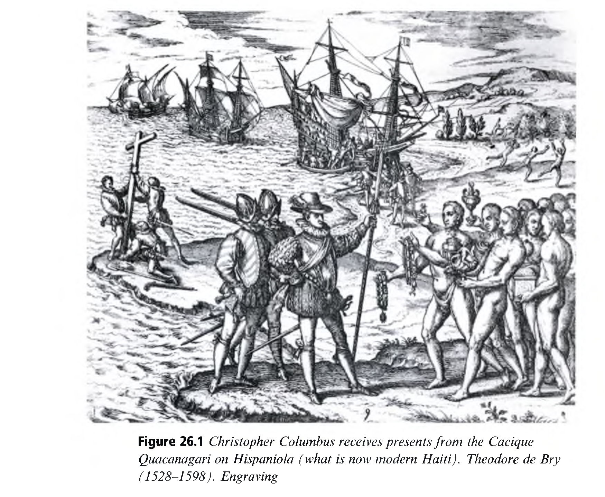

Learning History
역사 학습: 사실 암기에서 사료 비판과 역사적 사고력으로 — 1차·2차 개념, 마스터 내러티브 해체, 그리고 민주시민 역량
👥 저자 및 출처
Mario Carretero (Univ Autónoma de Madrid)
Everardo Perez-Manjarrez (Harvard Univ)
The Cambridge Handbook of the Learning Sciences (3rd ed.), Chapter 26
🎯 챕터 핵심 아젠다
- 역사적 사고(Historical Thinking): 연도 암기에서 1차 사료 비판과 해석으로
- 1차 실질 개념 vs 2차 절차적 메타개념: 사료 증거, 인과성, 맥락화, 변화
- 마스터 내러티브(Master Narratives) 해체: 6대 왜곡 특성과 다원적 관점
- 민주시민 역량: 과거를 통해 현재의 사회적 갈등을 비판적으로 조망하기
🎯 강의 목표 및 핵심 맥락
역사 교육이 단순한 국가적 신화나 연도 암기를 넘어, 불완전한 사료를 교차 검증하고 다원적 관점을 구성하는 '역사적 사고력(Historical Thinking)'으로 거듭나는 과정을 이해합니다.
📖 원문 심층 학술 해설
마리오 카레테로와 에버라도 페레즈 교수는 역사 인지 발달 및 국가 공식 역사 서사의 인지적 왜곡을 연구한 세계적 석학들입니다.
💡 수업/세미나 진행 팁 & 질문 가이드
"역사 교과서에 쓰인 내용은 과연 100% 객관적 사실일까요, 아니면 역사가의 해석일까요?"로 토론을 시작하세요.
과거 사실 암기에서 '역사적 사고력'으로의 대전환
샘 와인버그(Sam Wineburg)의 '부자연스러운 행위(An Unnatural Act)'로서의 역사적 사고
🚫 전통적 역사관: 닫힌 내러티브 암기
- 연도, 조약, 위인, 사건의 이름을 시험용으로 기계적 암기
- 역사를 완성된 단 하나의 정답 이야기(Story)로 수용
- 자연스러운 일상적 사고(확증 편향, 도덕적 이분법)에 의존
💡 학습과학적 역사관: 역사적 사고 (Historical Thinking)
- 상충하는 1차 사료(일기, 신문, 공문서)들을 비판적으로 비교·대조
- 당대 사람들의 시공간적 맥락 속으로 들어가 생각하는 '역사적 공감(Historical Empathy)'
- 훈련을 통해서만 도달할 수 있는 부자연스럽고 엄밀한 비판적 인지 실천
🎯 강의 목표 및 핵심 맥락
샘 와인버그 교수가 왜 역사적 사고를 '부자연스러운 행위(Unnatural Act)'라고 불렀는지 그 인지적 깊이를 설명합니다.
📖 원문 심층 학술 해설
인간의 자연스러운 본능은 과거를 '현재의 내 잣대(Presentism)'로 심판하는 것입니다. 과거 사람들의 맥락 속으로 들어가는 것은 고도의 인지적 훈련이 필요합니다.
💡 수업/세미나 진행 팁 & 질문 가이드
임진왜란이나 6.25 전쟁을 기록한 한국, 일본, 중국, 미국의 사료가 왜 서로 다른지 학생들과 비교해 보세요.
1차 실질적 개념 vs 2차 절차적 메타개념 (Table 26.1)
역사의 내용 지식과 역사가의 탐구 도구의 이원 구조
🏛️ 1차 실질적 개념 (First-Order: Substantive)
- 역사의 내용 지식: 왕, 국가, 계급, 혁명, 봉건제, 민주주의
- 발달 궤적: 단순 영웅 인물(나폴레옹) 중심 ➔ 사회 구조와 제도적 상호작용 개념으로 심화
🔍 2차 절차적 메타개념 (Second-Order: Procedural)
- 사료 증거 (Evidence): 신뢰성과 저자의 의도 평가
- 인과성 (Causation): 복합적 단기·장기 인과망 분석
- 연속성과 변화 (Continuity & Change): 발전과 퇴보의 공존
- 역사적 중요성 (Historical Significance)
🎯 강의 목표 및 핵심 맥락
원서 Table 26.1을 기반으로 1차 실질 개념과 2차 메타개념의 차이를 정립합니다.
📖 원문 심층 학술 해설
리(Peter Lee)와 셰밀트(Denis Shemilt): 2차 메타개념(증거, 인과, 변화)을 갖추지 못한 학생은 역사적 사실(1차 개념)을 아무리 많이 외워도 역사적 사고를 할 수 없습니다.
💡 수업/세미나 진행 팁 & 질문 가이드
프랑스 혁명을 배울 때 바스티유 감옥 습격(1차 사실)과 혁명의 복합 원인 분석(2차 인과 메타개념)의 차이를 논의하세요.
샘 와인버그의 사료 분석 3대 핵심 휴리스틱
역사학자처럼 텍스트를 비판적으로 심문하는 3가지 읽기 전략
1. 출처 확인 (Sourcing)
"누가, 언제, 어떤 의도로 썼는가?"
본문을 읽기 전에 저자의 배경, 출판 맥락, 이해관계를 먼저 검토
2. 맥락화 (Contextualization)
"당시의 시대적 상황은 어떠했는가?"
사건이 일어났던 당시의 지리, 문화, 사회적 규범 속으로 텍스트를 배치
3. 교차 대조 (Corroboration)
"다른 사료들도 일치하는가?"
여러 독립된 사료들을 서로 대조하여 진술의 일치성과 불일치 지점 발굴
🎯 강의 목표 및 핵심 맥락
역사적 문해력의 핵심인 3대 사료 비판 휴리스틱(Sourcing, Contextualization, Corroboration)을 배웁니다.
📖 원문 심층 학술 해설
와인버그(1991): 고등학생들은 텍스트를 진실로 믿고 첫 문장부터 읽지만, 전문 역사가들은 텍스트 맨 아래 '각주와 저자(Source)'부터 먼저 확인합니다.
💡 수업/세미나 진행 팁 & 질문 가이드
오늘날 인터넷 가짜 뉴스를 판별할 때 와인버그의 3대 사료 비판 전략이 어떻게 직결되는지 연결하세요.
콜럼버스와 카시케 판화 분석: 사료는 인공물이다
테오도르 드 브리(Theodore de Bry, 1594) 판화의 비판적 해체 (Figure 26.1)
🔍 사료 비판 인지 분석
- 초보 학생의 반응: "콜럼버스가 원주민 추장(Cacique)을 만나는 실제 장면을 찍은 그림이다" (무비판적 수용)
- 역사적 사고자의 반응: "이 그림은 사건 발생 100년 후, 신대륙에 가보지도 않은 유럽 판화가가 유럽인의 정복 이데올로기를 정당화하기 위해 그린 **역사학적 인공물(Historiographic Artifact)**이다!"

🎯 강의 목표 및 핵심 맥락
원서 Figure 26.1의 콜럼버스 판화 사례를 통해 시각 사료를 비판적으로 해체하는 역사적 사고 훈련을 분석합니다.
📖 원문 심층 학술 해설
사료는 '과거로 통하는 투명한 창문'이 아니라, 특정인의 관점과 의도가 투영된 '불투명한 인공물'임을 깨닫는 것이 핵심입니다.
💡 수업/세미나 진행 팁 & 질문 가이드
역사 다큐멘터리나 영화의 재연 장면을 볼 때 어떤 비판적 시각을 가져야 할지 토론하세요.
공식 학교 역사의 6대 마스터 내러티브 왜곡
국가 정체성 형성을 위해 역사를 신화화하는 6가지 인지·서사적 함정
1. 허구적 주체 상정
수천 년 전 고대인과 현대인을 동일한 '우리 민족'으로 등치
2. 감정적 동일시
역사적 사건을 나와 국가의 일체화로 몰입 (비판적 거리 상실)
3. 영웅주의 신화
복잡한 사회구조를 배제하고 소수 영웅의 결단으로 환원
4. 단선적 진보관
역사를 '자유와 독립'을 향한 필연적인 승리의 서사로 왜곡
5. 도덕적 선악 이분법
아군(선) vs 적군(악)의 유치한 대립으로 갈등 단순화
6. 낭만적 본질주의
민족성이 영원불변하다는 비과학적 본질주의 오류
🎯 강의 목표 및 핵심 맥락
카레테로 교수가 밝혀낸 공식 국가 역사 교과서의 6대 마스터 내러티브 왜곡 특성을 비판적으로 점검합니다.
📖 원문 심층 학술 해설
마스터 내러티브는 국민 통합에는 기여하지만, 학생들의 비판적 인지 능력을 마비시키고 타민족에 대한 배타성을 키울 위험이 큽니다.
💡 수업/세미나 진행 팁 & 질문 가이드
우리나라 역사 교과서나 미디어에 녹아 있는 '영웅주의 신화'나 '선악 이분법' 사례를 찾아보게 하세요.
시대착오(Presentism) 극복과 역사적 공감(Historical Empathy)
과거 사람들을 "미개하고 어리석다"고 심판하지 않고 당대의 눈으로 이해하기
🚫 시대착오적 현재주의 (Presentism)
- 현대 21세기의 지식, 윤리, 가치관으로 500년 전 사람들의 결정을 비웃고 단죄함
- "그들은 왜 과학적인 의학 대신 주술을 믿었을까? 바보 같네!" (역사적 맥락 무시)
✨ 역사적 공감 (Historical Perspective-Taking)
- 당시 사람들의 제한된 지식, 공포, 종교적 세계관, 경제적 제약 속으로 진입
- "그 시대의 조건에서는 그 선택이 가장 합리적인 최선이었을 수 있다"는 다원적 이해
🎯 강의 목표 및 핵심 맥락
역사 교육의 핵심 목표인 '시대착오(Presentism)' 극복과 '역사적 공감(Historical Empathy)'의 차이를 다룹니다.
📖 원문 심층 학술 해설
역사적 공감은 과거인의 악행을 옹호하는 것이 아니라, "인간은 자신이 처한 시대적 조건의 산물"임을 겸허히 깨닫는 인지적 능력입니다.
💡 수업/세미나 진행 팁 & 질문 가이드
조선시대 노비제도나 중세 마녀재판을 당대 사람들의 시각에서 분석하는 수업 활동을 토론하세요.
복합 인과성(Multi-Causality)과 역사적 우연성(Contingency)
"역사는 필연적 진보가 아니라 수많은 우연과 인간 선택의 산물이다"
장기적 구조 요인 (Long-term)
지리 환경, 인구 변동, 경제 체제 등 수십 년에 걸친 심층 구조적 조건
단기적 촉발 요인 (Triggers)
사라예보 암살 사건, 기근, 외교적 실책 등 찰나의 폭발 계기
역사적 우연성 (Contingency)
"만약 그 전투에서 비가 오지 않았다면?"
역사의 대안적 경로(Counterfactuals)를 상상하며 행위자 주체성 인식
🎯 강의 목표 및 핵심 맥락
역사적 인과 관계의 복합성(구조적 요인 + 촉발 요인 + 우연성)을 분석하는 법을 배웁니다.
📖 원문 심층 학술 해설
가상 역사(Counterfactual History) 사고 실험은 역사가 정해진 운명이 아니라 인간들의 치열한 선택의 결과임을 깨닫게 합니다.
💡 수업/세미나 진행 팁 & 질문 가이드
"만약 고구려가 삼국을 통일했다면?"과 같은 가상 역사 질문을 비판적 역사 탐구로 유도하는 방안을 논의하세요.
디지털 역사 탐구: 온라인 1차 사료 아카이브와 역사 GIS
스탠퍼드 SHEG(Stanford History Education Group)와 디지털 사료 플랫폼
📂 SHEG Reading Like a Historian
- 수천 점의 미국사/세계사 1차 사료를 교실 수업용으로 편집하여 무료 제공
- 학생들이 3~4개의 상충하는 일기와 신문 기사를 읽고 직접 역사 소논문 작성
- 미국 수만 개 학교에 도입된 가장 성공적인 역사 DBR 프로그램
🗺️ 역사 GIS 및 시계열 지도
- 노예 무역선의 항로, 전쟁 전선 이동, 도시 산업화 과정을 디지털 지도 위에 시각화
- 공간과 시간의 융합적 역사 탐구 지원
🎯 강의 목표 및 핵심 맥락
스탠퍼드 대학교 SHEG 프로젝트를 중심으로 디지털 역사 교육의 최신 혁신 사례를 분석합니다.
📖 원문 심층 학술 해설
디지털 아카이브의 보급으로 이제 교실의 학생들도 국립중앙박물관이나 의회도서관의 희귀 사료를 직접 열람하며 역사학자처럼 탐구할 수 있게 되었습니다.
💡 수업/세미나 진행 팁 & 질문 가이드
조선왕조실록 웹사이트(sillok.history.go.kr)를 활용한 학생 사료 탐구 수업을 기획해 보세요.
논쟁적 역사와 다원적 해석을 통한 비판적 민주시민 교육
역사는 고정된 암기 지식이 아니라, 민주 사회의 합의를 이끄는 토론의 광장
1. 다원적 해석 인정
동일한 사건도 계급, 성별, 민족에 따라 서로 다르게 기억될 수 있음을 수용
2. 증거 기반 토론
감정적 혐오와 선동을 배격하고 엄밀한 역사적 증거로 타인을 설득하는 규범
3. 과거와 현재의 성찰
과거의 인권 침해와 역사적 과오를 반성하며 더 정의로운 미래 사회 설계
🎯 강의 목표 및 핵심 맥락
역사 학습의 궁극적 지향점인 '성숙한 민주시민성(Democratic Citizenship)' 함양의 가치를 정립합니다.
📖 원문 심층 학술 해설
역사적 사고력을 갖춘 시민은 정치 권력의 역사 왜곡과 포퓰리즘 선동에 휘둘리지 않는 비판적 주체로 성장합니다.
💡 수업/세미나 진행 팁 & 질문 가이드
식민지 근대화론이나 과거사 청산과 같은 논쟁적 역사 주제를 교실에서 다루는 원칙을 토론하세요.
질문 중심 역사 탐구(Inquiry-Based History)의 4단계
교과서 요약 암기 수업을 전복하는 사료 기반 탐구 워크플로
1. 중심 질문
Central Question
"누가 보스턴 차 사건을 먼저 시작했는가?"
2. 사료 비교
Corroboration
목격자 A(영국군) vs B(식민지 주민) 증언 대조
3. 모둠 토론
Discussion
사료의 신뢰성과 저자의 편향을 논쟁
4. 역사 논증문
Historical Essay
증거를 인용하여 자신의 역사적 해석 서술
🎯 강의 목표 및 핵심 맥락
실제 학교 교실에서 실행할 수 있는 질문 중심 역사 탐구(Inquiry-Based History) 4단계를 배웁니다.
📖 원문 심층 학술 해설
중심 질문(Central Historical Question)은 예/아니오로 끝나지 않고, 사료를 읽어야만 답할 수 있는 지적 긴장감을 품고 있어야 합니다.
💡 수업/세미나 진행 팁 & 질문 가이드
한국사 단원에서 학생들의 열띤 논쟁을 유발할 수 있는 매력적인 중심 질문 3가지를 만들어 보세요.
역사 교사의 역할: 이야기꾼에서 '사료 탐구 퍼실리테이터'로
흥미진진한 옛날이야기 전달을 넘어 학생들의 비판적 사료 심문을 스캐폴딩
👨🏫 전통적 역사 교사 (Storyteller)
- 드라마틱하고 재미있는 옛날이야기로 학생들의 흥미 유발
- 한계: 학생들은 재미있게 듣지만 스스로 사료를 비판하는 역량은 기르지 못함
🔍 현대적 역사 교사 (Facilitator)
- 학생들이 다룰 적절한 난도의 1차 사료 세트(Document Sets)를 엄선하여 큐레이션
- "이 문장에서 저자가 왜 이 단어를 썼을까?" 메타인지적 발문 비계 투입
🎯 강의 목표 및 핵심 맥락
역사 교사의 교수학적 내용 지식(PCK)과 수업 정체성의 변화를 다룹니다.
📖 원문 심층 학술 해설
교사는 모든 역사적 사건의 정답을 아는 백과사전이 아니라, 학생들이 스스로 증거를 찾도록 돕는 역사학적 코치(Coach)여야 합니다.
💡 수업/세미나 진행 팁 & 질문 가이드
학생들이 고문서의 어려운 한자어나 옛 말투 때문에 포기하지 않도록 사료를 수정(Modified Documents)하는 전략을 논의하세요.
인터랙티브 역사 타임라인 코딩과 디지털 아카이브
자바스크립트와 파이썬 웹 크롤링을 활용한 역사 데이터 사이언스
💻 디지털 인문학(Digital Humanities) 코딩 프로젝트
- 텍스트 마이닝: 조선왕조실록 빅데이터에서 '역병', '기근', '과거' 단어 출현 빈도 시계열 분석
- 인터랙티브 타임라인: TimelineJS나 D3.js로 인물과 사건의 복합 인과 관계 인터랙티브 시각화
🎯 교육적 가치
인문학적 사료 비판(History)과 데이터 분석 알고리즘(CS)이 융합된 **21세기형 융합 리터러시(Interdisciplinary Literacy)** 체득
🎯 강의 목표 및 핵심 맥락
역사 교육과 컴퓨터 과학(데이터 사이언스, 웹 코딩)의 융합 모델인 '디지털 인문학(Digital Humanities)' 프로젝트를 소개합니다.
📖 원문 심층 학술 해설
파이썬 자연어 처리(NLP)를 통해 수천 페이지의 역사 사료에서 숨겨진 감정선과 네트워크를 시각화하는 연구가 활발합니다.
💡 수업/세미나 진행 팁 & 질문 가이드
학생들이 학교의 100년 역사를 디지털 아카이브 웹사이트로 코딩하는 프로젝트를 기획해 보세요.
역사적 사고: 과거를 통해 현재를 비판하는 지적 무기
학습과학자가 기억해야 할 역사 학습의 3대 나침반
사료 비판 휴리스틱
출처 확인, 맥락화, 교차 대조를 통해 텍스트의 불투명성과 저자의 의도를 심문
마스터 내러티브 해체
선악 이분법과 영웅주의 신화를 넘어 다원적 관점과 복합 인과성을 인정
민주시민성의 성장
과거의 상처와 갈등을 증거 기반으로 토론하며 더 성숙한 민주 사회 합의 도출
🎯 강의 목표 및 핵심 맥락
Chapter 26의 모든 핵심 교훈을 집대성합니다.
📖 원문 심층 학술 해설
역사적 사고력은 과거의 망령에 갇히지 않고, 미래의 열린 가능성을 향해 나아가는 가장 지혜로운 인문학적 나침반입니다.
💡 수업/세미나 진행 팁 & 질문 가이드
"오늘 수업을 통해 '역사를 공부하는 진짜 이유'에 대한 여러분의 생각이 어떻게 바뀌었나요?"
다음 여정: Chapter 27 리터러시 학습 (Literacy Learning)
캐롤 리(Carol D. Lee) & 피터 스마고린스키(Peter Smagorinsky)의 문해력 연구
🔬 Ch 26 vs Ch 27 연계성
- Ch 26 역사 학습: 1차 사료 텍스트 비판, 맥락화, 역사적 인과 내러티브
- Ch 27 리터러시 학습: 문학 텍스트 해석, 문화적 모델링(Cultural Modeling), 다중양식 문해력(Multimodal Literacies), 디지털 리터러시
🚀 Part V 교과별 학습의 인문학적 심화
역사(26) ➔ 리터러시(27) ➔ 예술(28)로 이어지는 인간의 상징 체계와 의미 구성의 정점
🎯 강의 목표 및 핵심 맥락
Chapter 26을 마무리하고, 다음 챕터인 Chapter 27(Literacy Learning)과의 이론적 연계성을 제시합니다.
📖 원문 심층 학술 해설
노스웨스턴 대학교 캐롤 리 교수의 문화적 모델링(Cultural Modeling) 이론과 문학 텍스트 해석 연구로 이어집니다.
💡 수업/세미나 진행 팁 & 질문 가이드
다음 Chapter 27을 기대하며 본 강의 슬라이드를 마칩니다.